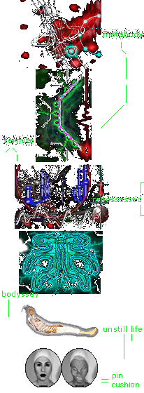

- language -
spired and mutated according 2 the dynamics of an active network. without doubt one of the most consistent, prolific, innovative artists working in new media today. Mez's work with language has had a considerable effect on the language of many. She is the 2001 Resident Artist at the WCG, has been awarded the 2001 VIF Prize by the Humboldt-Universitat in Berlin, was shortlisted for the prestigious 2001 Electronic Literature Organisation's Fiction Award, and has just been awarded the JavaMuseums' Artist Of The Year 2001 Award. Return to Art Gallery List of Artists Last update 25 Sep.
|
go here if you haven't already got a flash plugin installed. clusion r only a very small portion of a large body of my online work that has been evolving over a period of 6 years. reflecting formal programming language without being one. Larry Wall - author of the Perl programming language and a linguist by training. Brackets and alternative spellings interrupt the transmission as the process overcodes and reveals polysemic potentialities within the primary message.
go here if you haven't already got a flash plugin installed. clusion r only a very small portion of a large body of online net. reflecting formal programming language without being one. For the reader of mez's "netwurks", it remains all the more an open question whether the "mezangelle" para-code of parentheses and wildcard characters only mimics programming languages or is, at least partially, the product of programmed text filtering. Many thx go 2 reiner strasser 4 hosting the work on the workxspace site.
|  |
go here if you haven't already got a flash plugin installed. clusion r only a very small portion of a large body of online net. reflecting formal programming language without being one. For the reader of mez's "netwurks", it remains all the more an open question whether the "mezangelle" para-code of parentheses and wildcard characters only mimics programming languages or is, at least partially, the product of programmed text filtering. Many thx go 2 reiner strasser 4 hosting the work on the workxspace site.
 |
A good language site: http://www.walkerart.org/gallery9/szyhalski/dingansich/
.